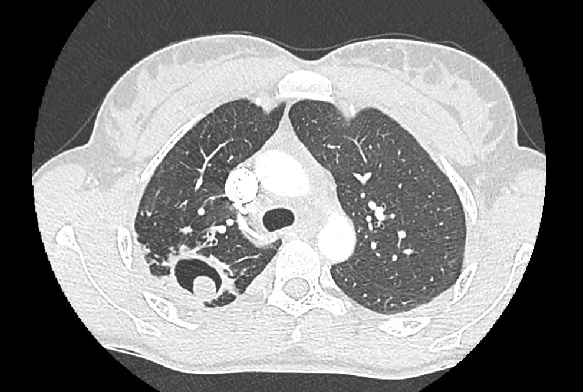

Ficha del catálogo
Aspergilosis pulmonar
- Sistema
- Respiratorio
- Modalidad
- TC
- Región
- Tórax
- Dificultad
- Avanzado
El hongo Aspergillus produce cuadros muy distintos según el estado inmunológico del paciente: Colonización de cavidades preexistentes, enfermedad alérgica en asmáticos y enfermedad invasiva en pacientes neutropénicos. Reconocer el patrón permite orientar el tratamiento con rapidez, especialmente en la forma invasiva, que tiene alta mortalidad.
Técnica
Tomografía de tórax con cortes finos, sin o con contraste según el escenario clínico, incluyendo estudio en decúbito prono cuando se sospecha aspergiloma móvil.
Qué observar
- Masa redondeada móvil dentro de una cavidad con aire en semiluna alrededor
- Nódulos con halo de vidrio deslustrado periférico en el paciente neutropénico
- Signo del aire creciente en la fase de recuperación de la neutropenia
- Impactación mucoide en bronquios centrales con patrón en dedo de guante
- Bronquiectasias centrales en la forma alérgica broncopulmonar
- Consolidaciones con infarto en la enfermedad angioinvasiva
Hallazgos
Hallazgos variables según la forma clínica: Masa intracavitaria móvil, nódulos con halo periférico o impactación mucoide bronquial central.
Perlas
El signo del halo en un paciente neutropénico febril sugiere aspergilosis angioinvasiva y justifica tratamiento precoz. El aspergiloma, en cambio, se mueve con los cambios de postura, y esa movilidad lo confirma.
Diagnóstico diferencial
- Tuberculosis cavitada
- Cavidad de pared gruesa con diseminación broncógena y contexto epidemiológico.
- Carcinoma cavitado
- Pared irregular y gruesa sin contenido móvil.
- Absceso pulmonar
- Nivel hidroaéreo con pared realzante y clínica infecciosa aguda.
Simuladores
- Coágulo intracavitario
- Quiste hidatídico complicado
- Neumonía necrosante
Por modalidad
- RX
- Detecta la cavidad y la masa intracavitaria
- TC
- Define el halo, la movilidad y la extensión angioinvasiva
Protocolo
Cortes finos volumétricos con reconstrucciones multiplanares y adquisición complementaria en decúbito prono si se busca movilidad de una masa intracavitaria.
Clasificación
Se agrupa en aspergiloma o forma saprofítica, aspergilosis broncopulmonar alérgica, forma crónica necrosante y aspergilosis invasiva.
Errores frecuentes
- No cambiar la posición del paciente para demostrar la movilidad del aspergiloma
- Interpretar el signo del halo como metástasis o hemorragia sin contexto
- Retrasar el tratamiento antifúngico en el neutropénico esperando confirmación microbiológica

aspergilosis aspergiloma signo del halo aire creciente neutropenia dedo de guante